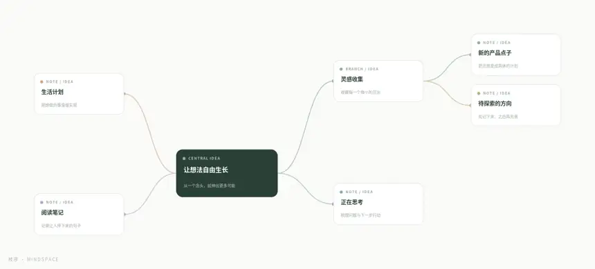

YOUR IDEAS, IN THEIR OWN RHYTHM
MINDSPACE · EDITION 02
让想法，
自然生长。
一张自由的画布，一个安静的空间。记录灵感、连接思路、插入图片，让每个念头都找到自己的位置。
Android 安装包 · 免费下载 · 支持离线使用
01 / THE CANVAS EXPERIENCE ↗

FOCUS ON YOUR THOUGHTS LOCAL FIRST
01
自由构建
创建节点、调整分支、拖拽排布，支持双指缩放与收起展开。
02
图文共生
文字与图片共同记录。提供笔记、配色、搜索与撤销重做。
03
只属于你
数据保存在当前设备，无需账号。可导出完整 JSON 备份。
INSTALL IN SECONDS
真正安装，随时开始。
Android 手机可点击上方按钮下载 APK 安装包；也可以通过浏览器添加网页版到桌面。iPhone 使用 Safari 的「添加到主屏幕」。
ANDROID01
Android 手机点击上方「下载 Android APK」，下载后在手机的下载文件中打开并安装。安装包由本项目自动构建；请只安装你信任来源的应用。
iOS / iPadOS02
iPhone · iPad用 Safari 打开本站，点击「分享」按钮，选择「添加到主屏幕」，再点击「添加」。完成后从桌面图标启动。
关于数据导图与图片保存在本设备中。卸载应用、清除数据或者更换设备可能丢失内容。建议定期进入导图页导出 JSON 备份。